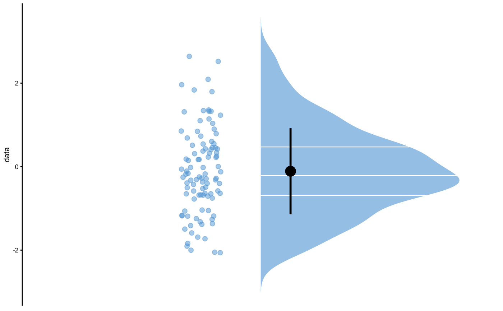
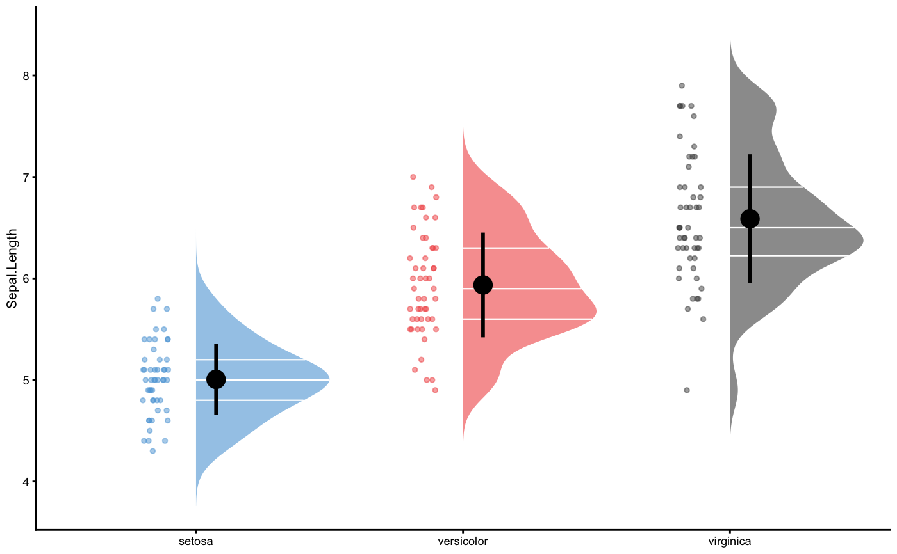

Returns default plotting parameters for plot_raincloud,
plot_raincloud_SESOI, and plot_pair_changes
plot_control( group_colors = c("#5DA5DA", "#F15854", "#4D4D4D", "#60BD68", "#FAA43A", "#F17CB0", "#B276B2", "#DECF3F"), effect_colors = c(Lower = "#F158546A", Equivalent = "#4D4D4D6A", Higher = "#60BD686A"), cloud_scale = 0.5, cloud_alpha = 0.6, cloud_color = NA, cloud_quantile_lines = TRUE, cloud_quantile_lines_size = 0.4, cloud_quantile_lines_color = "white", cloud_quantile_lines_adjust = FALSE, points_shape = 21, points_color = "black", points_fill = "black", points_size = 2, points_alpha = 0.5, points_jitter = TRUE, points_jitter_width = 0.1, points_gap = 0.1, summary_bar_nudge = 0.075, summary_bar_size = 1, summary_bar_color = "black", summary_bar_alpha = 0.8, bar_size = 3, bar_alpha = 0.5, line_size = 1, line_color = "black", line_alpha = 0.5, identity_line = TRUE, SESOI_band = TRUE, SESOI_color = "#4D4D4D6A", SESOI_alpha = 0.2, font_size = 8, legend_position = "none", smooth_method = "lm", smooth_se = FALSE, smooth_color = "#5DA5DA", smooth_fill = "#4D4D4D6A", smooth_alpha = 0.8, smooth_size = 1, bins = 30, panel_labels = c("A", "B", "C", "D", "E", "F"), panel_labels_size = 10, text_label_size = 3, coord_flip = TRUE, sort = TRUE )
| group_colors | Default groups plotting colors |
|---|---|
| effect_colors | Default effects plotting colors (i.e., Lower, Equivalent, Higher) |
| cloud_scale | Scale of the cloud |
| cloud_alpha | Cloud alpha/transparency |
| cloud_color | Border color of the cloud |
| cloud_quantile_lines | Should quantile lines be plotted? Default is TRUE |
| cloud_quantile_lines_size | Size of the quantile lines |
| cloud_quantile_lines_color | Color of the quantile lines |
| cloud_quantile_lines_adjust | Should quantile lines be extended? |
| points_shape | Point shape. Default is 21 |
| points_color | Point color. Default is "black" |
| points_fill | Point fill. Default is "transparent" |
| points_size | Point size |
| points_alpha | Transparency of the points |
| points_jitter | Should jitter be used? |
| points_jitter_width | Width of the jitter |
| points_gap | Gap between points and cloud |
| summary_bar_nudge | Gap between summary bar and cloud |
| summary_bar_size | Size of the summary bar |
| summary_bar_color | Color of the summary bar |
| summary_bar_alpha | Transparency of the summary bar |
| bar_size | Size of the bar |
| bar_alpha | Transparency of the bar |
| line_size | Line size |
| line_color | Line color. Default is "black" |
| line_alpha | Line transparency. Default is 0.5 |
| identity_line | Should identity line be plotted? |
| SESOI_band | Should SESOI band be plotted? |
| SESOI_color | Which color should |
| SESOI_alpha | Transparency for the SESOI band. Default is 0.2 |
| font_size | Overall size of fonts |
| legend_position | Position of the legend. Default is "none". See |
| smooth_method | Smoothing method (function) to use, accepts either a character vector, e.g.
"auto", "lm", "glm", "gam", "loess" or a function, e.g. MASS::rlm or mgcv::gam, stats::lm,
or stats::loess. Default is "loess". See |
| smooth_se | Should standard error be plotted? Defaults is |
| smooth_color | Color of the smooth line |
| smooth_fill | Color of the smooth confidence area |
| smooth_alpha | Transparency for the smooth line |
| smooth_size | Size of the smooth line |
| bins | Number of bins in histogram. Default is 30 |
| panel_labels | Labels for panels |
| panel_labels_size | Size of panel labels. Default is 10 |
| text_label_size | Size of the text labels. Default is 3 |
| coord_flip | Should figure be flipped? |
| sort | Should items be sorted? Default is TRUE |
List with plot control elements
#>plot_raincloud( iris, value = "Sepal.Length", groups = "Species", control = plot_control(points_size = 1) )#>